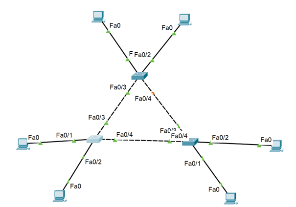
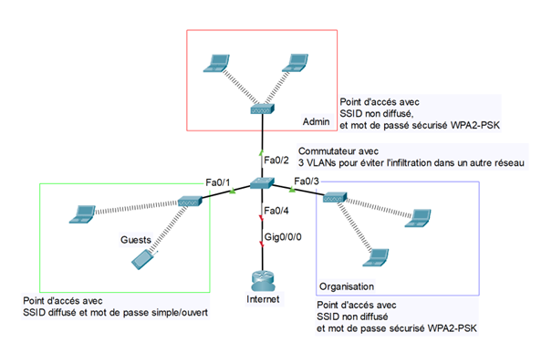

Projets
Projet DYLAN
Ce projet vise à permettre l’insertion dynamique des PC portables dans le VLAN correspondant à leur structure lorsqu’ils sont connectés à une prise Ethernet commune dans les salles de réunion de la Maison des Ligues (M2L).
Projet ASSIZ
Il vise à concevoir et déployer une infrastructure Wi-Fi temporaire pour les VIèmes assises nationales de l'Escrime.Le but de cette mission est de créer un réseau Wi-Fi temporaire bien sécurisé, avec des accès séparés pour les invités et le staff.
